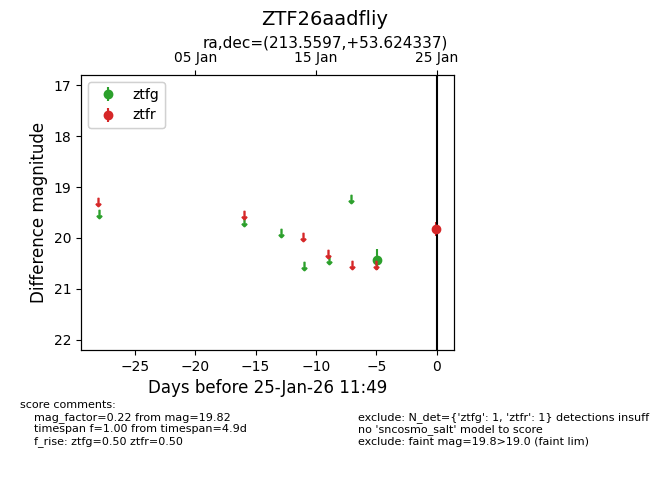
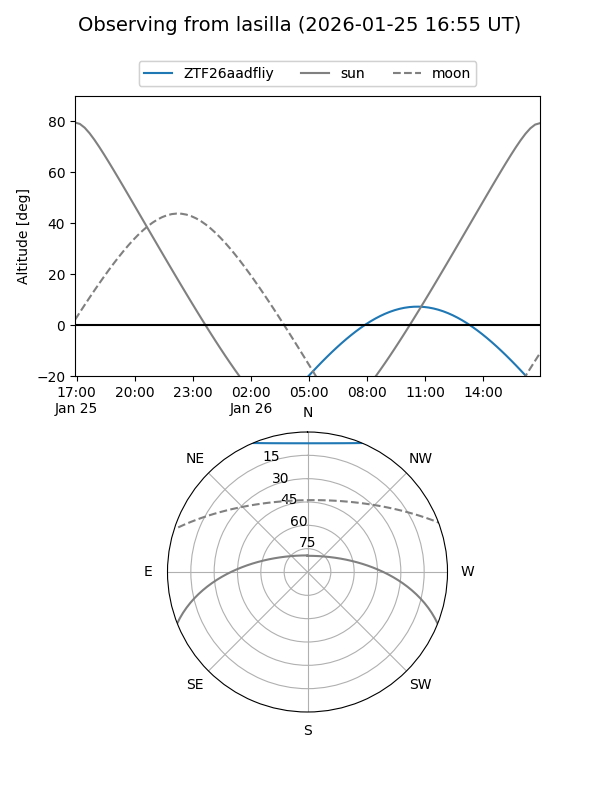
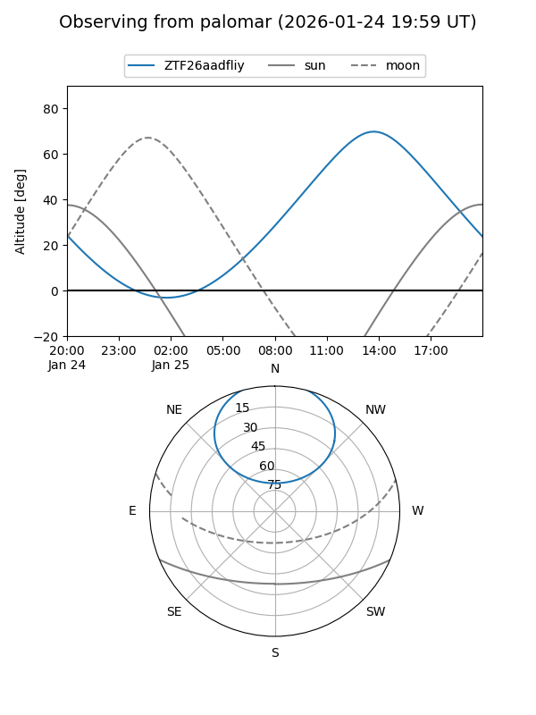

ZTF26aadfliy
Target ZTF26aadfliy at 2026-01-25 11:51
Aliases and brokers:
FINK: link
Lasair: link
ALeRCE: link
alt names
ZTF26aadfliy (ztf,fink_ztf)
Coordinates:
equatorial (ra, dec) = 213.5597,+53.62434
equatorial (HMS+DMS) = 14:14:14.33,+53:37:27.61
galactic (l, b) = (98.5992,+59.41659)
Flags:
Photometry:
last ztfg=20.42, ztfr=19.82
1 ztfg, 1 ztfr detections
Lightcurve

Visibility


Additional plots